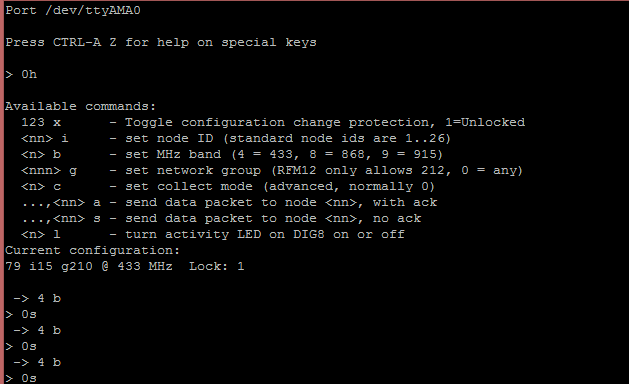

Hi,
Just purchased the following in order to log electrical consumption data and running into problems getting the system working.
- EmonTx V3 (433Mhz) - 1x CT and AC adapter
- EmonBase via Raspberry Pi & RFM12Pi @ 433Mhz
I have followed the steps here to set it up using the ready to go SD card & gateway - http://emoncms.org/site/docs/raspberrypigateway
Problem(s):
- Don't seem to be logging anything to emoncms.org
- Green LED on RFM12Pi does not come on/flash (apart from when powered on).
EmonTx
CT and/or AC adaptor plugged and powered via a USB DC power source.
I note that the red LED (near the USB connector) only ever flashes approximately every 5s. Isn't this meant to be solid initially and then flash?
Is there a way to check the configuration of the EmonTx or to rule out if it is/isn't OK?
RFM12Pi
Is there any way to test this without a working EmonTx? Want to make sure this is setup OK and is talking to emoncms.org.
I've installed the minicom driver and the default settings are as follows:
>minicom -b 9600 -o -D /dev/ttyAMA0
Available commands:
123 x - Toggle configuration change protection, 1=Unlocked
<nn> i - set node ID (standard node ids are 1..26)
<n> b - set MHz band (4 = 433, 8 = 868, 9 = 915)
<nnn> g - set network group (RFM12 only allows 212, 0 = any)
<n> c - set collect mode (advanced, normally 0)
...,<nn> a - send data packet to node <nn>, with ack
...,<nn> s - send data packet to node <nn>, no ack
<n> l - turn activity LED on DIG8 on or off
Current configuration:
79 i15 g210 @ 433 MHz Lock: 1
How do I change the node ID to 10 and get it to stay at that? I assume this is the standard for the the EmonTx?
Re: Raspberry Pi + Open Energy Monitor Setup Problems
The good news is that your RFM12Pi is configured correctly. The current configuration you are reading there is the settings of the RFM12Pi. The standard ID for that is 15 which is what you can see.
I'm guessing that if you stay looking at minicom you don't see any other lines of data appearing?
If so the problem you have is on the EmonTX.
So there are a couple of initial things to check.
1) Which plug are you plugging the CT into? Are you doubly sure you have it all the way in? (they can be very stiff!)
2) You don't say if you went for the fully built or the PCB version. If you went of the PCB version and soldered on the RFM12 unit, the first step is to check your soldering.
Re: Raspberry Pi + Open Energy Monitor Setup Problems
I see the following, sorry should have been a bit more patient..

I've tried CT1, CT2 and CT4 (only have 1 sensor). Have got it plugged fully in.
Got the fully built version.
Let me know if you need anymore information.
Re: Raspberry Pi + Open Energy Monitor Setup Problems
Have you got a USB to UART cable? Using this cable you should be able to read the serial output of the emonTx V3 (default 9600 baud). This output will help us debug further
The CT needs to be plugged in before powering on the emonTx, or hit the reset switch after plugging in a cable, it does a search at startup.
Re: Raspberry Pi + Open Energy Monitor Setup Problems
I have posted instructions of how to debug the emonTx V3 by reading it's serial output at the bottom of this page: http://openenergymonitor.org/emon/modules/emonTxV3
Re: Raspberry Pi + Open Energy Monitor Setup Problems
Hi,
I haven't got a USB to UART cable.
Yes, have plugged the CT in prior to powering it up. Have also hit the reset button after power up.
The frequency of the LED flashes (5 sec) seems strange and I haven't seen anyone else experience this.
Re: Raspberry Pi + Open Energy Monitor Setup Problems
Hi,
Thanks for sending the USB-UART cable. Much apprecaited.
What is the best way to diagnose this?
I have:
1. Setup the Arduino enviroment
2. installed the USB-UART driver
3 Opened up Arduino IDE and it shows COM3 under Tools-> Serial Port when I plug the USB cable in
4. Tools -> Serial Monitor is empty (baud 9600 is selected)
5. Have tried hitting reset on the emontx with no luck. Powered via USB cable with jump off.
Is it possible that there is no sketch loaded on to the emontx?
Please let me know what should be done next.
Re: Raspberry Pi + Open Energy Monitor Setup Problems
This is strange. You should not need to power the emonTx via USB it should self power via the UART cable, double check is been inserted the correct orientation. Do you still see the red led flash on the emonTx? What flashing pattern do you see? Does it only flash at startup?
Re: Raspberry Pi + Open Energy Monitor Setup Problems
Hi,
Yes, don't need to power it separately (I just did thinking it maybe required) and it does power itself off the UART cable. The little board on the USB-UART cable has a Blue light permanent lit.
The Red light on the emontx flashes every 5 seconds. Same as before. No flashing sequence and no change in flashing sequence.
I have no devices connected to it when connected via the UART cable btw.
What's next? Would appreciate a series of steps and options to try as opposed to trying to troubleshoot this one micro step at a time.
Should I try reloading the default sketch on to it? Is it likely that there is no sketch loaded onto it?
Please give me a few things to try so that I can go away and try them.
Re: Raspberry Pi + Open Energy Monitor Setup Problems
Debugging steps are detailed at the bottom of this page: http://openenergymonitor.org/emon/modules/emonTxV3
If your not seeing a serial output it could mean that some some reason there is no firmware on the emonTx.
Try pasting the following into the Arduino IDE and selecting upload, you should see the LED flash every second and print 'hello world' to the serial window
int led = 6; // the setup routine runs once when you press reset: void setup() { // initialize the digital pin as an output. pinMode(led, OUTPUT); Serial.begin(9600); } // the loop routine runs over and over again forever: void loop() { digitalWrite(led, HIGH); // turn the LED on (HIGH is the voltage level) delay(1000); // wait for a second Serial.println("hello world"); digitalWrite(led, LOW); // turn the LED off by making the voltage LOW delay(1000); // wait for a secondIf this works the next step is to upload the emonTx firmware from Github
https://github.com/openenergymonitor/emonTxFirmware/tree/master/emonTxV3/RFM12B/emonTxV3_RFM12B_DiscreteSampling
http://wiki.openenergymonitor.org/index.php?title=EmonTx_V3#Uploading_Arduino_Firmware
Re: Raspberry Pi + Open Energy Monitor Setup Problems
Hi,
Loaded up that test program and it worked fine. Seems like the firmware was not uploaded.
Have uploaded the firmware and all is well now. Thanks.
Re: Raspberry Pi + Open Energy Monitor Setup Problems
Very sorry about that, not sure what went wrong. glad you got it sorted. Ah, the wonders of open software